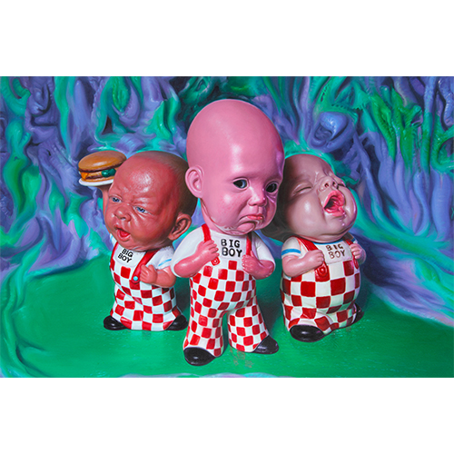
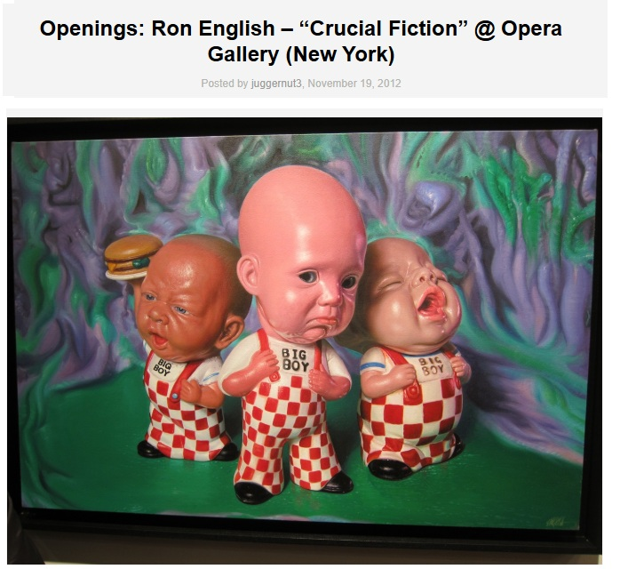
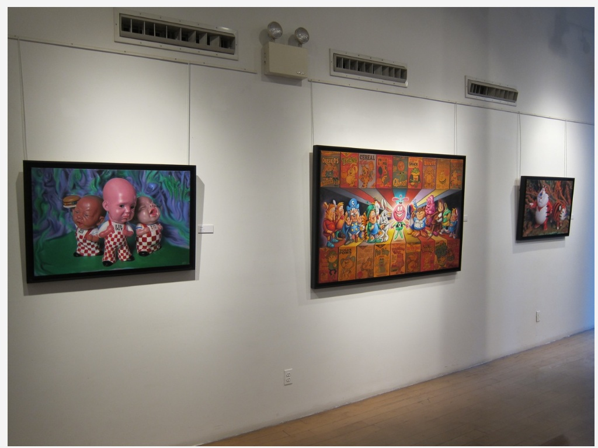

Exhibitions
Crucial Fiction, Opera Gallery, New York, New York, US, November 1–29, 2012.
Welcome to New Jersey, Jonathan LeVine Projects @ Mana Contemporary, Jersey City, New Jersey, US, February 18–March 18, 2017.
Literature
Ron English, Death and the Eternal Forever (Korero Press, 2014), p. 87. ISBN 978-0957664920.
Ron English, Status Factory: The Art of Ron English (San Francisco: Last Gasp of San Francisco, 2014), p. 104. ISBN 978-0867197891.
Ron English, Original Grin: The Art of Ron English (Paris: Cernunnos, 2019), p. 78. ISBN 978-2374950938.
Notes
This work appears in exhibition photographs published in juggernut3, “Openings: Ron English – “Crucial Fiction” @ Opera Gallery (New York),” Arrested Motion, November 19, 2012, available here, accessed April 17, 2026.

Ancillary Documentation

